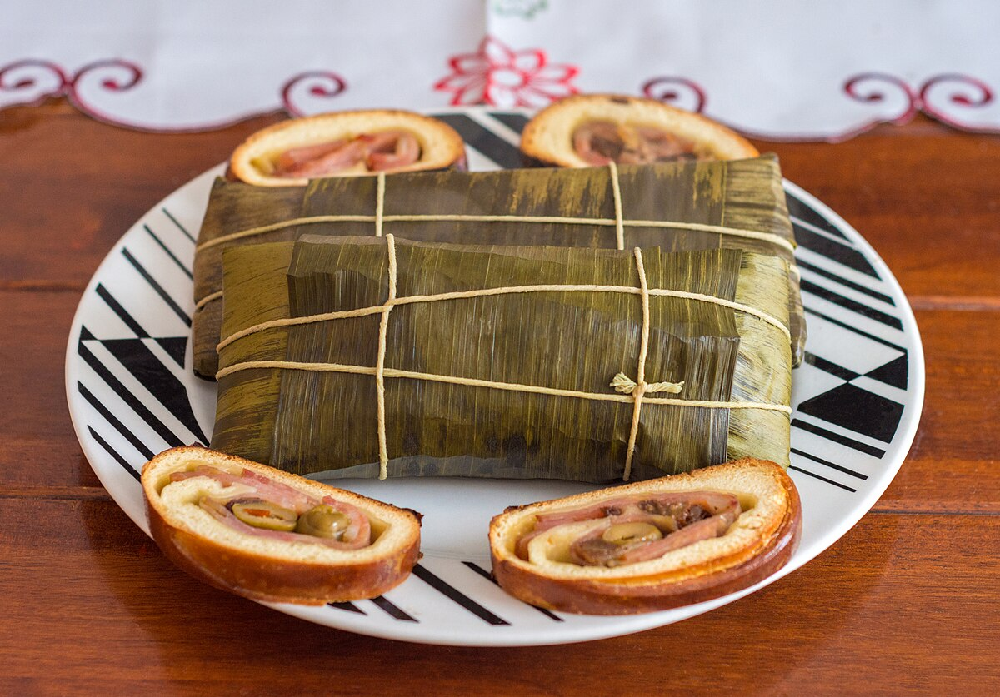

Hallacas

Descripción
El clasico platillo navideño venezolano, un bollo relleno de carne guisada, huevos y vegetales y envuelto en una hoja de platano
Ingredientes para la masa
- 2 ½ paquetes de harina de maíz
- 4 tazas de manteca de cochino
- 4 tazas de caldo de gallina
- 10 tazas de agua. (No necesariamente se usa toda)
- 1/2 taza de papelón rallado
- 4 cucharadas de sal
- 6 cucharadas de semillas de onoto
Preparación de la masa
- Coloca la harina de maíz en un bol bastante grande para poder amasarla,
y agregándole manteca de cochino, una parte (1 taza) hervida con onoto,
la manteca se cuela para descartar el onoto, y otra sin onoto (3 tazas).
- Agrega la sal y el papelón molido y se une todo bien, se le agrega poco a poco
las 4 tazas de caldo de gallina y se amasa de nuevo
- Se comienza a poner el agua que puede que no se use toda pues pondremos hasta
obtener una masa suave, completamente maleable, que no se pegue en las manos y que no se cuartee al estirarla.
Ingredientes del relleno
- 1 kg. de pimentón en julianas
- ½ kg. de tocineta cocido en tiritas
- ½ kg. de pechugas sin hueso en tiras
- ½ kg. de cebolla en aros
- 200 grs. de alcaparras
- 400 grs. de aceitunas rellenas
- ½ kg. de uvas pasas.
Hojas
- 50 pedazos de hojas de plátano de unos 30x30 cm. aproximadamente y pedazos que sobren para dar una segunda cobertura de protección.
- 1 rollo de pabilo
Preparación de las hallacas
- Disponga todos los adornos en un mesón amplio, las hojas se les retira la vena gruesa que trae a la orilla y se lavan muy bien, se secan con un paño y se disponen en el mesón.
Coloque la masa y el guiso de forma que estén al alcance de sus manos
- Ahora bien, primero va a tomar una hoja de las más grande y la engrasa con un poquito de manteca onotada, coloque, por el lado interior de la hoja, en el centro una bola de masa
que ocupe toda la mano y adelgácela con los dedos (hasta lograr ½ cm), creando una circunferencia simétrica, luego agregue el guiso ya frío y sobre éste coloque los adornos distribuidos armoniosamente.
- Luego doble por la parte ancha de la hoja una los 2 extremos y observe que se unan los lados de la masa para que el relleno quede cubierto.los 2 bordes de la hoja se unen y se doblan.
Se doblan luego los 2 extremos laterales hacia dentro y envuélvala luego con otra hoja más pequeña, luego, amárrela con pabilo cruzándola dos veces en cada dirección.
- Cuando tenga varias hallacas listas introdúzcalas en una olla grande con agua hirviendo por espacio con un poco de sal de 40 a 45 minutos, retírelas y escúrralas, deje que se enfríen completamente antes de guardarlas.
- Para calentarlas introdúzcalas en agua hirviendo por 20 minutos, retire y escúrralas.